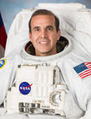

Lyndon B. Johnson Space Center
Houston, Texas 77058
|
National Aeronautics and Space Administration Lyndon B. Johnson Space Center Houston, Texas 77058 |
 |
Biographical Data |
||
Rick Mastracchio
NASA Astronaut
PERSONAL DATA: Born February 11, 1960, in Waterbury, Connecticut.
EDUCATION: Graduated from Crosby High School, Waterbury, Connecticut, in 1978; received a Bachelor of Science Degree in Electrical Engineering/Computer Science from the University of Connecticut in 1982, a Master of Science Degree in Electrical Engineering from Rensselaer Polytechnic Institute in 1987, and a Master of Science Degree in Physical Science from the University of Houston-Clear Lake in 1991.
EXPERIENCE: Rick Mastracchio worked for Hamilton Standard in Connecticut as an engineer in the system design group from 1982 until 1987. During that time, he participated in the development of high performance, strapped-down inertial measurement units and flight control computers.
NASA EXPERIENCE: In 1987, Mastracchio moved to Houston, Texas, to work for the Rockwell Shuttle Operations Company at the Johnson Space Center. In 1990, he joined NASA as an engineer in the Flight Crew Operations Directorate. His duties included the development of space shuttle flight software requirements, the verification of space shuttle flight software in the Shuttle Avionics Integration Laboratory, and the development of ascent and abort crew procedures for the Astronaut Office.
From 1993 to 1996, he worked as an ascent/entry Guidance and Procedures Officer (GPO) in Mission Control. During that time, he supported seventeen missions as a Flight Controller. In April 1996, Mastracchio was selected as an Astronaut Candidate and started training in August 1996. Mastracchio has worked technical issues for the Astronaut Office Computer Support Branch, Space Station Operations, the EVA Branch and as a Capsule Communicator (CAPCOM). He served as the display design lead for the space shuttle cockpit avionics upgrades in 2003. From 2004 to 2009, he worked various Constellation and Orion tasks including Cockpit Design Lead, and Constellation Deputy Branch Chief.
In April 1996, Mastracchio was selected as an Astronaut Candidate and started training in August 1996. Mastracchio has worked technical issues for the Astronaut Office Computer Support Branch, Space Station Operations, the EVA Branch and as a Capsule Communicator (CAPCOM). He served as the display design lead for the space shuttle cockpit avionics upgrades in 2003. From 2004 until 2009, he has worked various Constellation and Orion tasks including Cockpit Design Lead, and Constellation Deputy Branch Chief.
A veteran of four spaceflights, Mastracchio flew as a Mission Specialist on STS-106 on Atlantis, STS-118 on Endeavor, STS-131 on Discovery and a Russian Soyuz spacecraft. As of 2014, Mastracchio now has logged 228 days in space spanning four missions, including nine spacewalks totaling 53 hours.
SPACE FLIGHT EXPERIENCE: During the 12-day STS-106 Atlantis mission, the crew successfully prepared the International Space Station for the arrival of the first permanent crew. The five astronauts and two cosmonauts delivered more than 6,600 pounds of supplies and installed batteries, power converters, a toilet and a treadmill on the space station. Mastracchio was the ascent/entry flight engineer, the primary robotic arm operator, and was responsible for the transfer of items from the space shuttle to the space station. STS-106 orbited the Earth 185 times, and covered 4.9 million miles in 11 days, 19 hours, and 10 minutes.
With the STS-118 mission, Endeavour's crew successfully added another truss segment, a new gyroscope and an external spare parts platform to the International Space Station. Mastracchio was the ascent/entry flight engineer, and as EVA lead, he participated in three of the four spacewalks. Traveling 5.3 million miles in space, the STS-118 mission was completed in 12 days, 17 hours, 55 minutes and 34 seconds.
STS-131 Discovery, a resupply mission to the International Space Station, was launched at night from the Kennedy Space Center. On arrival at the station, Discovery’s crew dropped off more than 27,000 pounds of hardware, supplies and equipment, including a tank full of ammonia coolant, new crew sleeping quarters and three experiment racks. As the EVA lead, Mastracchio performed three spacewalks during this mission and logged 20 hours and 17 minutes of spacewalks. The STS-131 mission was accomplished in 15 days, 02 hours, 47 minutes, 10 seconds, and traveled 6,232,235 statute miles in 238 orbits.
Mastracchio launched on Expedition 38/39 from the Baikonur Cosmodrome in Kazakhstan to the International Space Station along with Soyuz Commander Mikhail Tyurin of the Russian Federal Space Agency (Roscosmos) and Japan Aerospace Exploration Agency (JAXA) Flight Engineer Koichi Wakata. During his stay aboard the space station, Mastracchio conducted three spacewalks, the first two to remove and replace a faulty cooling pump, and the third to remove and replace a failed backup computer relay box. Mastracchio, Tyurin and Wakata returned to Earth after 188 days in space. During the expedition, the crew completed 3,008 orbits of the Earth and traveled more than 79.8 million miles.
SOCIAL MEDIA: Twitter: https://twitter.com/AstroRM
OCTOBER 2014